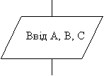
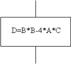
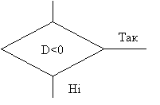
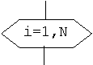

Слово „алгоритм” походить від імені математика Аль Хорезмі, який сформулював правила виконання арифметичних дій. Спочатку під алгоритмом розуміли тільки правила виконання чотирьох арифметичних дій. Надалі це поняття стали використовувати для позначення послідовності дій, яка приводить к рішенню будь-якої задачі.
Алгоритм – одно з головних понять математики. Але людині доводиться зустрічатися з алгоритмами і в житті.
Наприклад, вам потрібно записати всі етапи зміни пробитого колеса у автомобіля. В результаті отримаємо такий алгоритм дій:
При цьому важливо пам’ятати, що послідовність дій при виконанні цього алгоритму дуже важлива. Наприклад, послабити болти на колесі потрібно до того, як ми поставимо машину на домкрат.
Алгоритм – послідовність дій, що приводить к рішенню поставленої задачі за скінчену кількість операцій.
Алгоритм обчислювальної задачі – скінчена послідовність команд, яка перетворює вхідні дані у вихідні.
Можна виділити три основних види обчислювальних алгоритмів:
Блок-схема алгоритму – це графічне представлення логічної структури алгоритму, де кожний етап обробки інформації зображаються у вигляді геометричних символів (блоків).
Існують правила зображення блок-схем алгоритмів. Кожен алгоритм має початок та кінець. Кожна команда алгоритму представляється у вигляді геометричних символів, які мають певну конфігурацію, в залежності від характеру дій, що будуть виконуватись. Геометричні символи з’єднуються між собою лініями або стрілками, які вказують порядок виконання дій.
Ми будемо використовувати такі основні графічні символи:
| Вигляд блоку | Призначення |
|---|---|
| Початок алгоритму | |
|  | Блок вводу вхідних даних |
|  | Блок обробки інформації. В блоці пишуться формули. |
|  | Блок умови. В блоці пишеться умова, в залежності від якої вибираються напрями дії алгоритму. |
|  | Заголовок циклу FOR |
| Блок виводу результату. | |
| Кінець алгоритму. |
Один і той же алгоритм може бути записаний у вигляді тексту або блок-схеми будь-якою мовою, яка зрозуміла людині: українською, російською, англійською. Такий алгоритм розуміє людина але не розуміє комп’ютер.
Програма – алгоритм, призначений для виконання на комп’ютері і записаний мовою, яку розуміє комп’ютер.
Але комп’ютер може виконати програму тільки якщо вона представлена у машинному коді – послідовності чисел. Людині написати програму у машинному коді досить важко. Тому сьогодні всі програми створюються за допомогою мов програмування, які наближені до мови людини. Цих мов багато: Бейсік, Паскаль, Делфі, Сі та багато інших.
Один і той же алгоритм може бути записаний на будь-який мові програмування!
Текст програми, написаний а мові програмування повинен бути перетворено у машинний код. Ця операція виконується автоматично за допомогою спеціальної програми, яка називається транслятором.
Наша головна ціль навчитись складати алгоритми так, щоб їх змог виконувати комп’ютер.